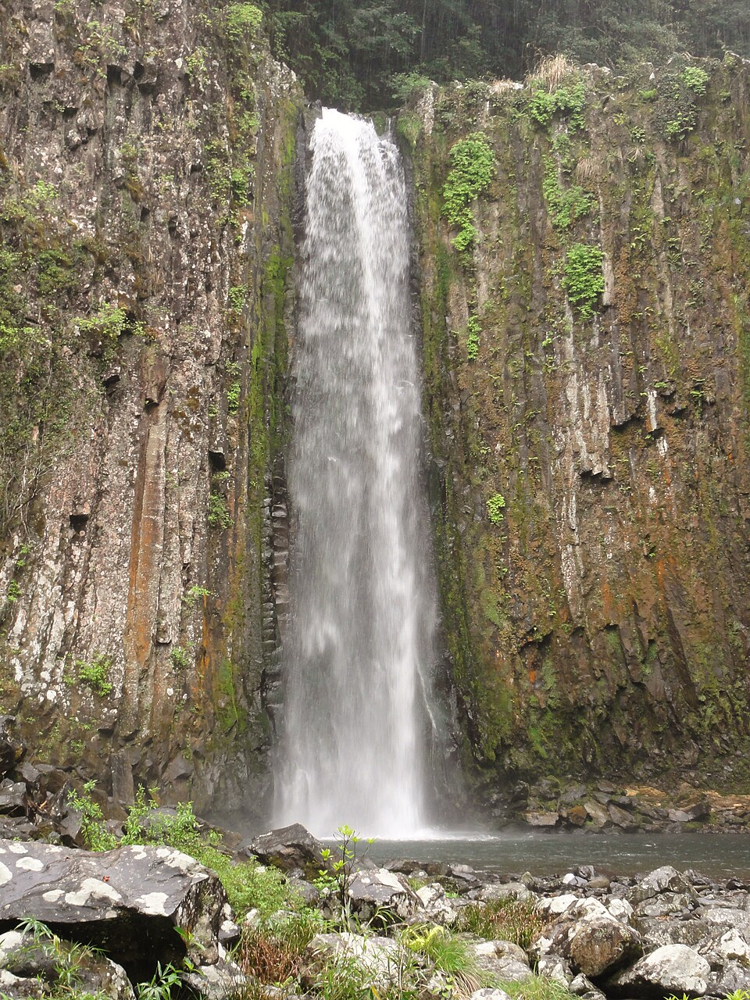

滝と紅葉、夏目友人帳ゆかりの地。車の時間は人吉駅からの目安です。

11/19の2時22分ごろ、天草・芦北地方を震源とする地震（M5.7）があり、球磨村・あさぎり町で震度5弱、人吉市で震度4を観測しました。7月の熊本地震の影響でも、人吉城跡の本丸などがいまも立入禁止です。滝や山道の遊歩道は、出かける前に状況を確かめてください。立入禁止や運休がある場所は、地図のピンを赤い点線で囲み、説明に赤字で書いています。
地域ごとに、人吉駅からの所要時間の目安順に掲載。観光案内に同じ区間の時間がある場所は、Googleマップの時間と併記しています。候補地を選ぶと、地図と撮影メモが開きます。
| 日付 | 明るくなる | 日の出 | 日の入り | 暗くなる |
|---|---|---|---|---|
| 11/21 土 | 6:24 | 6:51 | 17:14 | 17:41 |
| 11/22 日 | 6:25 | 6:52 | 17:14 | 17:40 |
| 11/23 月 | 6:26 | 6:52 | 17:14 | 17:40 |
人吉の緯度経度から計算した値で、地平線が平らな場合の時刻です。「明るくなる・暗くなる」は市民薄明（太陽が地平線の下6度）。山あいの滝や五家荘では、尾根に隠れて日の入りより早く日が陰ります。
樹種はケヤキ・モミジ・カエデ・ブナ・ツガ・ドウダンなど。例年の見頃は11月上旬〜中旬。2026年は、ウェザーニュースで五家荘（葉木）とせんだん轟がいずれも11月18日時点で「見頃（7〜8割色づき）」。落葉はじめは葉木が11月20日ごろ、せんだん轟と五家荘全体が11月23日ごろからの予想。ウォーカープラスでは梅の木轟公園吊橋が11月19日16:12更新で「今見頃」。ウェザーニュースのリポートでは11月15日に一本松から「落葉も始まってるかな？」との投稿あり。
2026年の紅葉祭の交通規制（日付・区間・方式）は出典で確認できなかった（観光サイトは2026年10月下旬〜11月下旬開催・日程未定、紅葉祭期間は交通規制予定ありと記載）。主催の「五家荘ねっと」は旧URLが別サイトに変わっており閲覧できず。参考に2025年は、いずれも10:00〜16:00で、11月9・16・23日（日）は五家荘地域で一方通行、11月8・9・15・16・22・23日と24日（祝）は二本杉峠から美里町方面へ通行できず（美里町→二本杉峠の一方通行）、土曜と24日は地域内の一部で交互通行だった。2024年は11月3・4・10日、2023年は3・5・12日に一方通行。規制は国道445号の一部などで行われる。問い合わせは八代市泉支所（0965-67-2111）、五家荘観光案内所（0965-36-5800）。
鹿目の滝は岩がもろく、麓城址はぬかるみと木の根がある。靴に付ける滑り止めがあると安心。
今週末のあさぎり町は最低気温マイナス1度の予報。朝晩はかなり冷える。日の入りは17時ごろ。
五家荘は紅葉まつりの期間中で、週末は交通規制がある（方式は八代市泉支所 0965-67-2111 か五家荘観光案内所 0965-36-5800 で確認）。JR肥薩線は運休中。くま川鉄道は9/20に全線で再開した。